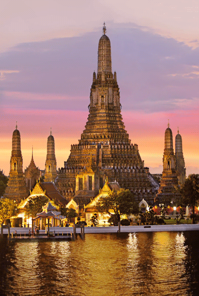
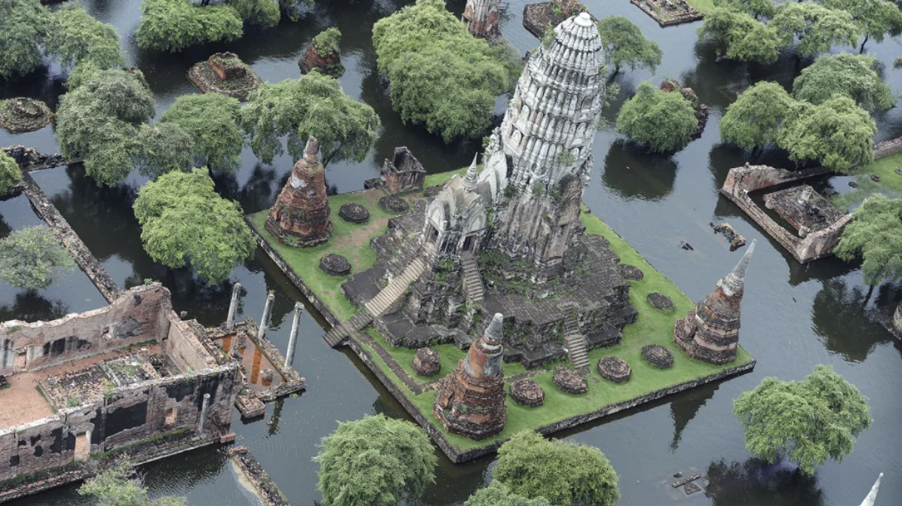

Rome, Italy


Geographical Location: Europe
Rome is one of the oldest metropolitan areas in the world. With a history dating back to 700 BC with the birth of the Roman Empire, the city has maintained its status as a cultural and historical hub of Europe. The city is peppered with ancient monuments, statues, and piazzas from different eras of history. The most famous location, the Colosseum, is touted as one of the seven modern wonders of the world. Rome houses several world famous museums, such as the Borghese and the Vatican Museum. It is also the only city in the world to encompass a recognized country, Vatican City.
Rome is also a great location for food, wine, and leisure. At the heart of Italy, Rome is a central gathering place for a diverse array of Italian cuisine; Neapolitan Pizza from the south, Tuscan wine, and truffle from the north. Rome's most famous dish is carbonara. Beyond the food, Rome has a vibrant nightlife. The Trastevere neighborhood has plenty of bars and clubs for patrons and, just over the river, Centro's shopping district is always bustling.
Photo Gallery

The Trevi Fountain was designed in the 18th century.

The Vatican, which is technically its own country, is located in Rome.

Rome has an endless amount of beautiful architecture!

The Forum is just one of many historic sites in the city.

Victor Emmanuel, depicted in this statue, was one of the Kings of Italy.
Credit: Frank Pelosi
New York City, United States of America


Geographical Location: North America
New York City thrives as a vibrant tapestry of cultures, languages, and experiences. Its streets pulse with energy, reflecting the city's boundless diversity. From the rhythmic beats of street performers in Times Square to the aroma of diverse cuisines wafting through neighborhoods, NYC's lively atmosphere encapsulates a living, breathing microcosm of the world.
From the iconic skyline to the bustling streets, it's a place where dreams are both pursued and realized. The city's fast-paced lifestyle is balanced by its diverse communities, offering a unique blend of cultures, cuisines, and experiences around every corner. Amid the hustle and bustle, there's a sense of constant motion and an electrifying energy that makes life in the Big Apple truly extraordinary.
Photo Gallery

Washington Square Park is even more pretty during the winter months.

Times Square is always busy and colorful.

The yellow taxi is an icon of New York that can take you anywhere in the city.

The Brooklyn Bridge, connecting the boroughs of Manhattan and Brooklyn, was the longest suspension bridge in the world when it was built.

Bibble & Sip in New York City sells some very delicious cream puffs!
Credit: Marilyn Wang
Los Angeles, United States of America


Geographical Location: North America
Los Angeles is a sprawling Southern California city and the center of the nation's film and television industry. Near its iconic Hollywood sign, studios such as Paramount Pictures, Universal and Warner Brothers offer behind-the-scenes tours. On Hollywood Boulevard, TCL Chinese Theatre displays celebrities' hand- and footprints, the Walk of Fame honors thousands of luminaries and vendors sell maps to stars' homes.
Los Angeles is famous for its idyllic, warm climate. Temperatures are high but pleasant all year round while rainfall is uncommon and mainly limited to the winter months.
Photo Gallery

Los Angeles stretches far and wide, with neighborhoods well outside the downtown area.

The scenery of the west paired with a big-city skyline is a great combo!

Los Angeles City Hall is one of the many gorgeous buildings the city has to offer.

The Hollywood Sign is one of the world's most iconic locations.

Los Angeles has some very luxurious houses!
Credit: Iris Sirui Wang & Sue Yixin Wang
Bangkok, Thailand

Geographical Location: Asia
Bangkok, Thailand's capital, is a large city known for ornate shrines and vibrant street life. It is officially known in Thai as Krung Thep Maha Nakhon and colloquially as Krung Thep.
Bangkok welcomes more visitors than any other city in the world and it doesn't take long to realize why. Bangkok is a city of contrasts with action at every turn. Marvel at the gleaming temples, catch a tuk tuk through bustling Chinatown or take a longtail boat through floating markets. Food is another Bangkok highlight, from local dishes served at humble street stalls to haute cuisine at romantic rooftop restaurants.
Photo Gallery

Khlong Lat Mayom is a water market, and it is well known for its food.

The Grand Palace is a complex of buildings at the heart of Bangkok.

Khao San road, which now represents a series of streets, is a place in downtown Bangkok where backpackers and tourists are immediately drawn to from when they first touch down in the airport.

Wat Arun is one of the most popular and well-known places of worship. Famous for its iridescent glow when first light hits its porcelain finish at dawn, it also resembles an ancient city at first glance.
The Ancient City is very large, with many different landmarks to see.
Credit: Jinjin Cai
Chiangmai, Thailand


Geographical Location: Asia
Chiang Mai, nestled in the lush hills of northern cultural richness and natural beauty. Situated approximately 700 kilometers north of Bangkok, Chiang Mai is the largest city in the region and serves as the capital of the province of the same name. Its geographical location is nothing short of enchanting, surrounded by forested mountains and picturesque landscapes. This charming city, often referred to as the "Rose of the North," offers visitors a delightful escape from the bustling urban life, inviting them to explore a realm where tradition meets modernity amidst a backdrop of stunning scenery.
The heart of Chiang Mai beats with a rich history that dates back over 700 years. Founded in 1296, the city was originally the capital of the ancient Lanna Kingdom. Today, remnants of its storied past are scattered throughout the city, from the ancient temples that dot the landscape to the preserved city walls and moats that harken back to a bygone era. Among the city's treasures is the revered Wat Phra Singh, a 14th-century temple known for its intricate architecture and revered Buddha image. Chiang Mai's historical sites provide a captivating glimpse into its heritage, making it a destination that seamlessly weaves together the past and present for visitors to explore and appreciate.
Photo Gallery

You can see hot balloons in Chiang Mai.

You can also see cute elephants in Chiang Mai!

There are so many beautiful temples in Chiang Mai.

Be respectful to the monks.

And don't forget to treat yourself with delicious Thai food!